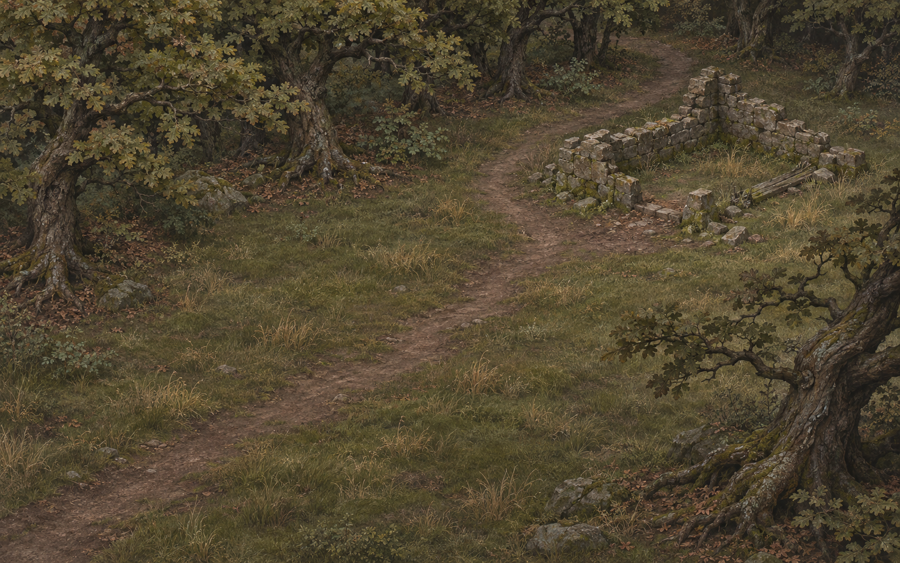

Hollowbane · Static art-direction study · 01
The woodland boundary
A worn path beside a small ruined stone enclosure. One original composition for visual review.
Gameplay viewport · 1280 × 800
The image below stays at its actual gameplay display size. On smaller windows, scroll to inspect it.

Flat measurement guide only; this does not demonstrate character art, perspective matching or gameplay integration.